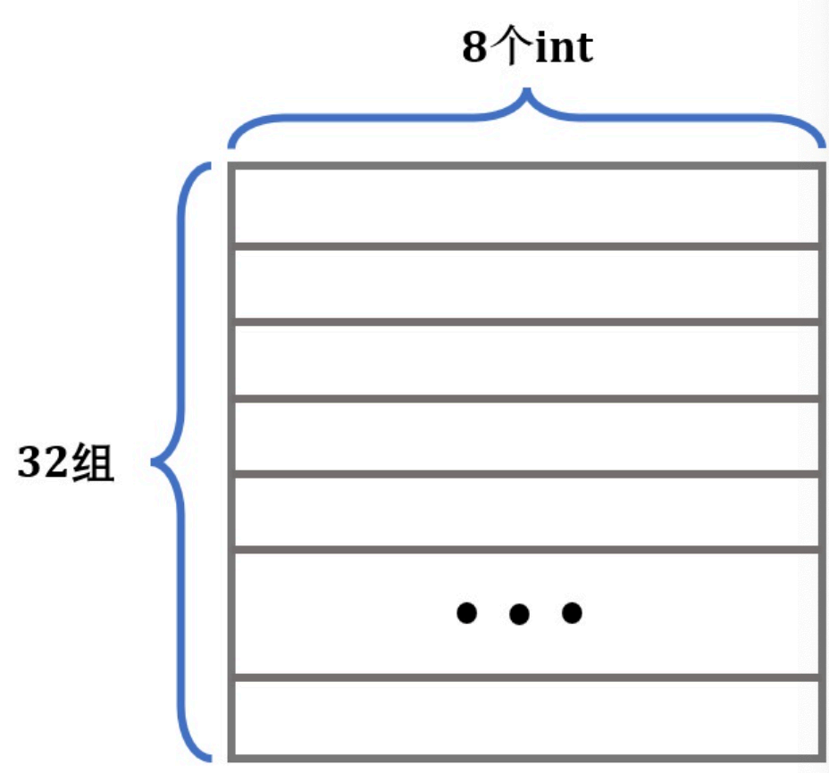
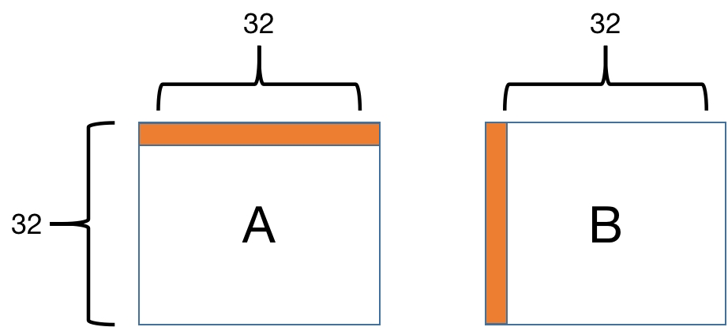
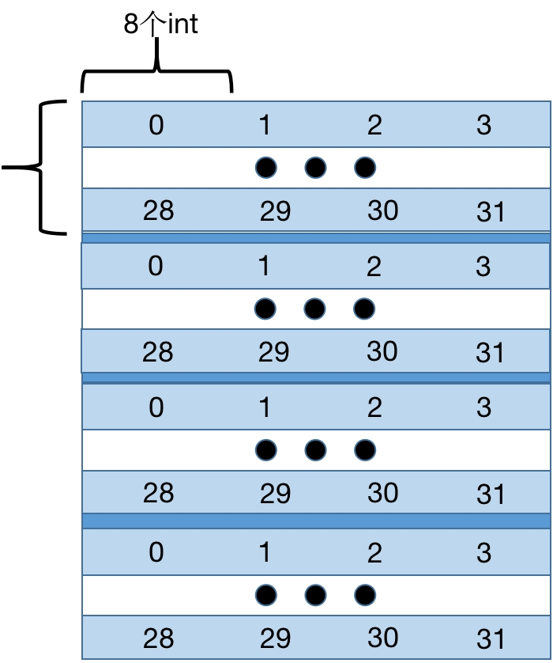

Part B: 优化矩阵转置函数¶
实验内容¶
Part B部分，你需要要在trans.c中写一个矩阵转置函数，使其在运行过程中尽可能少地引起Cache Miss。
\(A\)表示一个矩阵，\(A_{i,j}\)表示\(A\)矩阵的第\(i\)行、第\(j\)列，矩阵A的转置用\(A^T\)表示，满足\(A_{i,j}=A_{j,i}^T\)。
为了让你更好地开始优化转置函数，在trans.c中我们给出了一个示例的转置函数，这个函数可以计算\(N\times M\)矩阵A的转置并存储到\(M\times N\)矩阵\(B\)中：
char trans_desc[] = "Simple row-wise scan transpose";
void trans(int M, int N, int A[N][M], int B[M][N])
{
int i, j, tmp;
for (i = 0; i < N; i++) {
for (j = 0; j < M; j++) {
tmp = A[i][j];
B[j][i] = tmp;
}
}
}
显然这个函数是正确的，但是对于Cache而言执行效率很低，会导致大量的Cache Miss，在Part B中你的工作是在trans.c中写一个功能相同的函数transpose_submit，尽可能地减小Cache Miss次数。
char transpose_submit_desc[] = "Transpose submission";
void transpose_submit(int M, int N, int A[N][M], int B[M][N]) {
if (M == 32 && N == 32) {
// you can do 32x32 transpose here
} else if (M == 64 && N == 64) {
// you can do 64x64 transpose here
} else {
// you can do 61x67 transpose here
}
}
注意不要修改上面的描述字符串"Transpose submission"，打分时会寻找这个字符串来确定你提交的函数。
本地测试¶
Note
你可能会奇怪为什么Part B的实验评测部分会在这时候说明，实际上Part B是允许你进行“面向测试用例编程”，所以在这里先给给出PartB的所有的测试用例，以及每个测试用例对于Cache Miss次数的要求。
可以通过运行test-trans文件来测试你的函数在运行时Cache Miss的数量，例如你想测试你的转置函数对于一个\(61\times 67\)的矩阵进行转置时Cache Miss的数量，可以使用如下命令进行测试：
命令行中的-M以及-N后跟的是矩阵的行数和列数。
./test-trans会使用另一个cache模拟器csim-ref-partB来模拟cache访问，这是一个一级cache。换句话说，你在完成Part B的时候，无需考虑多级cache的问题。
在Part B测试时，Cache结构是直接映射的，且不会发生改变，具体参数配置为(s=5, E=1, b=5)：
- size: 1KB
- set: 32
- cache line size: 32B
并且你不需要对于所有的大小的矩阵都完成转置的优化，我们在进行评分的时候只会对如下三个测试用例进行测试：
- \(32 \times 32\) (\(M = 32, N = 32\))
- \(64 \times 64\) (\(M = 64, N = 64\))
- \(61 \times 67\) (\(M = 61, N = 67\))
这三个测试用例以及每个测试用例的Cache Miss限制如下（假设某个测试用例中Cache Miss的次数为m）：
- \(32\times 32\) : \(10\) points if \(m < 300\)，\(0\) points if \(m > 600\)
- \(64\times 64\) : \(8\) points if \(m < 1300\)，\(0\) points if \(m > 2000\)
- \(61\times 67\) : \(10\) points if \(m < 2000\)，\(0\) points if \(m > 3000\)
也就是说，你可以在你的代码中显式地判断输入参数中矩阵的行数和列数，然后对每个测试用例进行单独编程。
Note
在开始写PartB之前请先看一下下面PartB的代码规则部分，明确要求后，你可以省去一些多余的工作。
代码规则¶
trans.c文件一定要可以正常编译（0 warning 0 error）。- 在每个转置函数中，你只允许定义最多12个
int类型的局部变量。 - 不允许使用任何
long类型的变量或者尝试将多个值存储到一个变量中。 - 不允许使用递归。
- 如果你选择使用辅助函数，则从转置函数开始的栈中同时存在局部变量数目不能超过12个，例如你的转置函数定义了8个局部变量，转置函数中调用了一个函数定义了2个局部变量，这个函数又定义了4个局部变量，那栈中就会存在14个局部变量，你就违反规则了。
- 你的转置函数不能修改A矩阵的值，但可以随意修改B矩阵的值。
- 代码中不允许定义任何数组或者调用类似
malloc的函数。
在最后评分时，都会按照如上的代码规则进行严苛的检查，请大家注意不要出现超出代码规则的操作。
下面是对于Part B一些可能有用的提示：
Tip
-
Cache Miss的三种情况：
- Complusory Miss：在刚开始冷启动的时候，这时候Cache内没有包含任何局部的任何信息，此时Cache Miss是无法忽略的无法避免的，但是准确估计这部分的Cache Miss数量对后续的实现有很多好处。
- Capacity Misses：当你的工作集（Working Set）太大的时候，往往Cache没法保存下所有的信息，此时会出现一些由于容量不足而导致的Cache Miss，比如我们实验中的Cache，通常只能保存下32 * 8个
int。为了可以减少这种Capacity Misses，你可以尝试缩小你的求解问题的规模，大问题转化为小问题，大矩阵转化为几个小矩阵（啊呀我好像说漏嘴了一些关键信息（笑））。 - Conflict Misses：有些时候，不同地址的内容会映射到同一个Cache Line，这会导致简单的操作却反复的出现Cache Miss，一个好的解决方法是，另开空间或者采用临时变量（在本实验中允许12个以内的临时变量），来减轻这些问题的产生。
-
\(64\times 64\)矩阵转置的优化可能比较复杂，可以先完成\(32\times 32\)和\(61\times 67\)矩阵转置的优化，从中寻找灵感，再去完成\(64\times 64\)矩阵转置的优化。
Cache性能分析¶
如果大家看完上面的提示之后还是没有什么思路，不要着急，这一小节对一个简单的矩阵转置函数的Cache Miss次数进行粗略计算，让你了解Cache访问过程，从中你可能会找到减少Cache Miss的办法。
首先我们不考虑什么Cache Miss，仅关注矩阵转置的正确性，你可能会写出如下三行非常精简的代码：
char transpose_submit_desc[] = "Transpose submission";
void transpose_submit(int M, int N, int A[N][M], int B[M][N])
{
for(int i = 0; i < N; i ++)
for(int j = 0; j < M; j ++)
B[j][i] = A[i][j];
}
OK，大功告成！这一段代码肯定是功能正确的，于是我们信心满满地开始尝试使用评分软件来测试咱们可以得到的分数。我们把这个代码直接写入trans.c，编译后执行测评程序得到的典型运行结果如下
我们直接使用test-trans，进行第一个测试用例（\(32\times 32\)）的测试。
得到的典型输出结果：
$ ./test-trans -M 32 -N 32
Function 0 (2 total)
Step 1: Validating and generating memory traces
File deleted successfully
Step 2: Evaluating performance (s=5, E=1, b=5)
func 0 (Transpose submission): hits:869, misses:1184, evictions:1152
Function 1 (2 total)
Step 1: Validating and generating memory traces
File deleted successfully
Step 2: Evaluating performance (s=5, E=1, b=5)
func 1 (Simple row-wise scan transpose): hits:869, misses:1184, evictions:1152
Summary for official submission (func 0): correctness=1 misses=1184
TEST_TRANS_RESULTS=1:1184
运行结果的输出含义是，在(s=5, E=1, b=5)的Cache下，你的函数运行时，Cache Hit的次数是hits:869，Cache Miss的次数是misses:1184。在Part B评测部分我们提到，如果你想在\(32\times 32\)的testcase下获得满分，你需要把你的程序控制在300次Cache Miss以下。
那我们这里的程序性能到底糟糕在哪呢？这就需要分析一下程序运行的访存过程。
程序运行的Cache访问过程分析¶
我们的测试场景是一个直接映射*8的、Block大小是32字节的、一共有32个Cache Set**的Cache模拟器(s=5, E=1, b=5)。
因此测试场景的Cache具有如下的典型结构：

一个Cache Line可以保存8个int，我们以这个Cache结构为例，考虑我们刚才的暴力做法：
void transpose_submit(int M, int N, int A[N][M], int B[M][N])
{
for(int i = 0; i < N; i ++)
for(int j = 0; j < M; j ++)
B[j][i] = A[i][j];
}
这里我们会按行优先读取A矩阵，然后一列一列地写入B矩阵。

我们知道，Cache是以Cache Line形式读取内存的。以第1行为例，在从内存读 A[0][0] 的时候，除了 A[0][0] 被加载到Cache中，它之后的 A[0][1]---A[0][7] 也会被加载进Cache。
但是内容写入 B 矩阵的时候是一列一列地写入，在列上相邻的元素不在一个内存块上，这样每次写入都不命中Cache。并且一列写完之后再返回，原来写入Cache的内容可能被覆盖了，这样就又会不命中。
接下来我们来定量地分析Cache Miss的次数。Cache只够存储一个矩阵的四分之一，A中的元素对应的Cache Line每隔8行就会重复。A和B的地址由于取余关系，每个元素对应的地址是相同的，各个元素对应Cache Line如下：

对于A，每8个int就会占满Cache的一组，所以每一行会有32/8=4次不命中；而对于B，考虑最坏情况，每一列都有32次不命中，由此，算出总不命中次数为4×32+32×32=1152。
但是为什么出现了1184次的Cache Miss，这是由于对角线上的元素通常存在一些特殊情况，对角线上的情况请大家自行分析哦~
Note
程序优化的方法有很多，分块访问只是其中的一种，这远远不是极限，为了极致的性能，你还可以尝试SIMD（数据级并行），循环展开，指令级并行，OpenMP等内容。
对上述内容感兴趣的同学，可以参考《Computer Architecture: A Quantitative Approach》，详细的介绍了所有体系结构方面的并行处理和优化机制。
如果你觉得还不过瘾，可以期待XJTU-ICS Lab5: Optimization Lab或者CS 61C Project4。😍
Copyright © 2026 XJTU ICS-TEAM